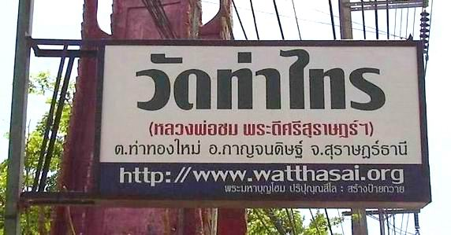

หมายเหตุ.-
โครงการ ในข้อ ๘.๕,๘.๖,
๘.๗,
๘.๘
และ ๘.๙
โดยมี
พระมหาบุญโฮม
ปริปุณฺณสีโล (ไชยฤทธิ์) เป็นผู้ดำเนินการ และรับผิดชอบค่าใช้จ่ายเองทั้งหมด
ดำเนินการมีตั้งแต่ พ.ศ. ๒๕๓๖ แล้วได้ยุติลงเมื่อ
๑ พฤศจิกายน ๒๕๔๗ ที่ผ่านมา (รวมดำเนินการเป็นเวลา ๑๑ ปีเศษ)
๘.๑๐
จัดตั้งศูนย์พัฒนาคุณธรรม
เพื่อให้การอบรมค่ายคุณธรรมจริยธรรมแก่นักเรียน
นักศึกษา โดยจัดส่งพระวิทยากรไปให้การฝึกอบรมนักเรียน นักศึกษาในสถานศึกษาทั้งในจังหวัดสุราษฎร์ธานี
และจังหวัดต่าง ๆ ทั่วประเทศ ผู้สนใจสามารถศึกษาข้อมูลเพิ่มเติมได้ที่
http://www.rakdee.net
๘.๑๑
จัดตั้งวิทยุชุมชน วัดท่าไทร
ร่วมกับ สมาคมป้องกันภัย และประชาชนชาวท่าทองใหม่ ได้จัดตั้งจุดปฏิบัติการเตรียมความพร้อมวิทยุชุมชน
(จ.ว.ช.) ท่าทองใหม่ขึ้นที่วัดท่าไทร โดยใช้ชื่อจุดปฏิบัติการฯ
ว่า "วิทยุชุมชนตำบลท่าทองใหม่
FM 107.25 MHz." ออกอากาศ
มาตั้งแต่วันที่ ๑๙ กรกฎาคม ๒๕๔๙ โดยมีนโยบายเพื่อให้บริการข้อมูล
ข่าวสาร สาระ ธรรมะ และความบันเทิงสู่ชุมชน ออกอากาศทุกวัน ตั้งแต่เวลา
๐๖.๐๐ - ๒๒.๐๐ น.ทุกวัน โดยไม่มีโฆษณา และไม่เกี่ยวข้องกับธุรกิจ
และการเมืองใด ๆ ทั้งสิ้น
ซึ่งมีพระภิกษุ สามเณร จัดรายการด้านธรรมะ และให้ความรู้ทั่วไป
และมีประชาชนในชุมชนอาสาสมัครเข้ามาจัดรายการเพื่อประโยชน์ต่อคนในชุมชน
ตามอุดมการณ์วิทยุชุมชน ในการนี้
โดยตั้งคณะกรรมการขึ้นมาคณะหนึ่ง เพื่อพิจารณา กำหนดทิศทาง นโยบาย
ดำเนินการ โดยมอบให้ พระมหาบุญโฮม ปริปุณฺณสีโล และนายสง่า
เพ็ชรัตน์ ในการหาข้อมูล ความเป็นไปได้ แล้วร่างระเบียบ ข้อบังคับ
ฯลฯ และจัดทำเอกสารต่าง ๆ ยื่นต่อสำนักประชาสัมพันธ์เขต 5 เพื่อเข้าร่วมโครงการจุดปฏิบัติการเตรียมความพร้อมวิทยุชุมชนเป็นที่เรียบร้อย
และได้รับการสนับสนุนสายอากาศ โดยการให้ข้อมูล ข่าวสาร สาระ ธรรมะ
และความบันเทิงสู่ชุมชน โดยเฉพาะอย่างยิ่ง ประกาศข่าว ประชาสัมพันธ์เพื่อให้เกิดความสามัคคีและการเรียนรู้ร่วมกันของคนในสังคม
ซึ่งได้รับการตอบรับจากประชาชนในชุมชนทุกชุมชน และชุมชนใกล้เคียงเป็นอย่างดียิ่ง
โดย พระมหาบุญโฮม
ปริปุณฺณสีโล (ไชยฤทธิ์) เป็นผู้จัดดำเนินการ และรับผิดชอบค่าใช้จ่ายเองทั้งหมด
ผู้สนใจทราบข้อมูลเพิ่มเติม สามารถดูได้ที่
http://www.songpak16.com/chumchon
หมายเหตุ.-
วิทยุชุมชนตำบลท่าทองใหม่
FM 107.25 MHz. ได้ยุติการดำเนินการออกอากาศแล้ว
ตั้งแต่วันที่ ๑ กรกฎาคม ๒๕๕๒ เป๋นต้นมา

ป้ายไฟขนาดใหญ่
ซึ่ง พระมหาบุญโฮม ปริปุณฺณสีโล (ไชยฤทธิ์) ได้จัดทำขึ้นมาโดยความเห็นชอบของเจ้าอาวาสวัดท่าไทร
เพื่อแนะนำวัดท่าไทร (หลวงพ่อชม พระดีศรีสุราษฎร์ฯ) แก่ผู้ผ่านไปมา
(สร้าง เมื่อ พ.ศ. ๒๕๕๓)
พ.ศ. ๒๕๓๖
มีนักเรียนน.ธ.ตรี
๕๕ รูป สอบ ๓๘ รูป สอบได้ ๒๕ รูป สอบตก ๑๓ รูป
นักเรียนน.ธ.โท
๑๓ รูป สอบ ๑๑ รูป สอบได้ ๙ รูป สอบตก ๒ รูป
นักเรียน
น.ธ.เอก ๓ รูป สอบ ๓ รูป สอบได้ ๓ รูป สอบตก - รูป
มีนักเรียนแผนกบาลีดังนี้.-
ประโยค
๑-๒ มี ๑๓ รูป สอบ ๑๑ รูป สอบได้ ๑ รูป สอบตก ๑๐
รูป
ประโยค
ปธ.๓ มี ๓ รูป สอบ ๓ รูป สอบได้ ๑ รูป สอบตก ๒ รูป
ประโยค
ปธ.๔ มี ๒ รูป สอบ ๒ รูป สอบได้ - รูป สอบตก ๒ รูป
ประโยค
ปธ.๕ มี ๓ รูป สอบ ๒ รูป สอบได้ - รูป สอบตก ๒ รูป
ประโยค
ปธ.๖ มี ๒ รูป สอบ ๑ รูป สอบได้ ๑ รูป สอบตก - รูป
ประโยค
ปธ.๗ มี ๑ รูป สอบ ๑ รูป สอบได้ - รูป สอบตก ๑ รูป
พ.ศ.
๒๕๓๗
มีนักเรียนน.ธ.ตรี
๓๕ รูป สอบ ๒๕ รูป สอบได้ - รูป สอบตก ๒๕ รูป
นักเรียนน.ธ.โท
๑๒ รูป สอบ ๑๐ รูป สอบได้ ๔ รูป
สอบตก ๖ รูป
นักเรียน
น.ธ.เอก ๗ รูป สอบ ๗ รูป สอบได้ ๒ รูป สอบตก
๕ รูป
นักเรียน
ธ.ศ.ตรี ๙๒ คน สอบ ๗๒ คน สอบได้ ๑๓ คน
สอบตก ๕๙ คน
นักเรียน
ธ.ศ.โท ๑๔ คน สอบ ๑๒ คน สอบได้ ๑ คน
สอบตก ๑๑ คน
นักเรียน
ธ.ศ.เอก ๕ คน สอบ ๒ คน สอบได้ ๑ คน สอบตก ๑
คน
มีนักเรียนแผนกบาลีดังนี้.-
ประโยค
๑-๒ มี ๖ รูป สอบ ๔ รูป สอบได้ - รูป สอบตก ๔ รูป
ประโยคปธ.๓
มี ๒ รูป สอบ ๒ รูป สอบได้ ๑ รูป สอบตก ๑ รูป
ประโยคปธ.๔
มี ๒ รูป สอบ ๒ รูป สอบได้ - รูป สอบตก ๒ รูป
ประโยค
ปธ.๕ มี ๑ รูป สอบ ๑ รูป สอบได้ - รูป สอบตก ๑ รูป
ประโยค
ปธ.๖ มี ๑ รูป สอบ ๑ รูป สอบได้ - รูป สอบตก ๑ รูป
ประโยค
ปธ.๗ มี ๑ รูป สอบ ๑ รูป สอบได้ - รูป สอบตก ๑ รูป
พ.ศ.
๒๕๓๘
มีนักเรียนน.ธ.ตรี
๔๑ รูป สอบ ๑๐ รูป สอบได้ ๙ รูป สอบตก ๑ รูป
นักเรียน
น.ธ.โท ๕ รูป สอบ ๔ รูป สอบได้ - รูป สอบตก -
รูป
นักเรียน
น.ธ.เอก ๕ รูป สอบ ๒ รูป สอบได้ ๑ รูป
สอบตก ๑ รูป
นักเรียน
ธ.ศ.ตรี ๑๕๕ คน สอบ ๑๔๐ คน สอบได้ ๑๐๓ คน สอบตก ๓๗ คน
นักเรียน
ธ.ศ.โท ๒๖ คน สอบ ๒๓ คน สอบได้ ๑๙ คน สอบตก ๔ คน
นักเรียน
ธ.ศ.เอก ๕ คน สอบ ๕ คน สอบได้ ๔ คน สอบตก ๑ คน
มีนักเรียนแผนกบาลีดังนี้.-
ประโยค
๑-๒ มี ๑๓ รูป สอบ ๑๑ รูป สอบได้ ๑ รูป สอบตก ๑๐ รูป
ประโยค
ปธ.๓ มี ๓ รูป สอบ ๓ รูป สอบได้ ๑ รูป สอบตก ๒ รูป
ประโยค
ปธ.๔ มี ๒ รูป สอบ ๒ รูป สอบได้ - รูป สอบตก ๒ รูป
ประโยค
ปธ.๕ มี ๓ รูป สอบ ๒ รูป สอบได้ - รูป สอบตก
๒ รูป
ประโยค
ปธ.๖ มี ๒ รูป สอบ ๑ รูป สอบได้ ๑ รูป สอบตก
- รูป
ประโยค
ปธ.๗ มี ๑ รูป สอบ ๑ รูป สอบได้ - รูป สอบตก ๑ รูป
พ.ศ.
๒๕๓๙
มีนักเรียน
น.ธ.ตรี ๔๑ รูป สอบ ๘ รูป สอบได้ ๘ รูป สอบตก - รูป
นักเรียน
น.ธ.โท ๑๑ รูป สอบ ๔ รูป สอบได้ ๒ รูป สอบตก ๒ รูป
นักเรียน
น.ธ.เอก ๑ รูป สอบ ๑ รูป สอบได้ ๑ รูป สอบตก - รูป
นักเรียน
ธ.ศ.ตรี ๑๓๗ คน สอบ ๑๑๒ คน สอบได้ ๑๑๒ คน สอบตก - คน
นักเรียน
ธ.ศ.โท ๘๐ คน สอบ ๖๓ คน สอบได้ ๕๒ คน สอบตก ๑๑ คน
นักเรียน
ธ.ศ.เอก ๑๔ คน สอบ ๑๑ คน สอบได้ ๑๐ คน สอบตก ๑ คน
มีนักเรียนแผนกบาลีดังนี้.-
ประโยค
๑ - ๒ มี ๔ รูป สอบ ๒ รูป สอบได้ - รูป สอบตก
๒ รูป
ประโยค
ปธ.๓ มี ๑ รูป สอบ ๑ รูป สอบได้ - รูป สอบตก ๑ รูป
ประโยค
ปธ.๖ มี ๒ รูป สอบ ๒ รูป สอบได้ - รูป สอบตก ๒ รูป
ประโยค
ปธ.๗ มี ๑ รูป สอบ ๑ รูป สอบได้ ๑ รูป สอบตก - รูป
พ.ศ.
๒๕๔๐
มีนักเรียน
น.ธ.ตรี ๒๖ รูป สอบ ๙ รูป สอบได้ ๗ รูป
สอบตก ๒ รูป
นักเรียน
น.ธ.โท ๗ รูป สอบ ๔ รูป สอบได้ ๓ รูป
สอบตก ๑ รูป
นักเรียน
น.ธ.เอก ๓ รูป สอบ ๓ รูป สอบได้ ๓ รูป สอบตก
- รูป
นักเรียน
ธ.ศ.ตรี ๙๓ คน สอบ ๘๔ คน สอบได้ ๗๘ คน สอบตก
๖ คน
นักเรียน
ธ.ศ.โท ๑๒๔ คน สอบ ๑๐๙ คน สอบได้ ๔๗ คน สอบตก
๖๒ คน
นักเรียน
ธ.ศ.เอก ๒๔ คน สอบ ๒๓ คน สอบได้ ๒๑ คน สอบตก
๒ คน
มีนักเรียนแผนกบาลีดังนี้.-
ประโยค
๑ - ๒ มี ๒ รูป สอบ - รูป สอบได้ - รูป สอบตก - รูป
ประโยค
ปธ.๖ มี ๒ รูป สอบ ๒ รูป สอบได้ - รูป สอบตก ๒ รูป
ประโยค
ปธ.๘ มี ๑ รูป สอบ ๑ รูป สอบได้ - รูป สอบตก ๑ รูป
พ.ศ.
๒๕๔๑
มีนักเรียน
น.ธ.ตรี ๓๐ รูป สอบ ๑๖ รูป สอบได้ ๑๖ รูป สอบตก - รูป
นักเรียน
น.ธ.โท ๗ รูป สอบ ๗ รูป สอบได้ ๔ รูป สอบตก ๓ รูป
นักเรียน
น.ธ.เอก ๒ รูป สอบ ๒ รูป สอบได้ ๑ รูป สอบตก ๑ รูป
นักเรียน
ธ.ศ.ตรี ๘๖ คน สอบ ๖๖ คน สอบได้ ๖๖ คน สอบตก - คน
นักเรียน
ธ.ศ.โท ๑๐๓ คน สอบ ๗๘ คน สอบได้ ๑๙ คน สอบตก ๕๙ คน
นักเรียน
ธ.ศ.เอก ๔๗ คน สอบ ๒๙ คน สอบได้ ๒๗ คน สอบตก ๒ คน
มีนักเรียนแผนกบาลีดังนี้.-
ประโยค
๑ - ๒ มี ๒ รูป สอบ ๒ รูป สอบได้ - รูป สอบตก ๒ รูป
ประโยค
ปธ.๓ มี ๑ รูป สอบ - รูป สอบได้ - รูป สอบตก - รูป
ประโยค
ปธ.๖ มี ๒ รูป สอบ ๒ รูป สอบได้ - รูป สอบตก ๒ รูป
พ.ศ.
๒๕๔๒
มีนักเรียน
น.ธ.ตรี ๒๘ รูป สอบ ๑๗ รูป สอบได้ ๑๗ รูป สอบตก - รูป
นักเรียน
น.ธ.โท ๘ รูป สอบ ๘ รูป สอบได้ ๔ รูป สอบตก ๔ รูป
นักเรียน
น.ธ.เอก ๓ รูป สอบ ๓ รูป สอบได้ ๑ รูป สอบตก ๒ รูป
นักเรียน
ธ.ศ.ตรี ๗๑ คน สอบ ๒๑ คน สอบได้ ๑๑ คน สอบตก ๑๐ คน
นักเรียน
ธ.ศ.โท ๑๒๑ คน สอบ - คน สอบได้ ๓ คน สอบตก - คน
นักเรียน
ธ.ศ.เอก ๑๖ คน สอบ ๑๑ คน สอบได้ ๓ คน สอบตก ๘ คน
มีนักเรียนแผนกบาลีดังนี้.-
ประโยค
๑ - ๒ มี ๒ รูป สอบ ๒ รูป สอบได้ - รูป สอบตก ๒ รูป
ประโยค
ปธ.๓ มี ๑ รูป สอบ - รูป สอบได้ - รูป สอบตก - รูป
ประโยค
ปธ.๔ มี ๒ รูป สอบ ๒ รูป สอบได้ ๑ รูป สอบตก ๑ รูป
ประโยค
ปธ.๕ มี ๑ รูป สอบ ๑ รูป สอบได้ - รูป สอบตก ๑ รูป
ประโยค
ปธ.๖ มี ๒ รูป สอบ ๒ รูป สอบได้ - รูป สอบตก ๒
รูป
ประโยค
ปธ.๘ มี ๑ รูป สอบ ๑ รูป สอบได้ - รูป สอบตก ๑ รูป
พ.ศ.
๒๕๔๓
มีนักเรียน
น.ธ.ตรี ๓๐ รูป สอบ รูป สอบได้ - รูป สอบตก
รูป
นักเรียน
น.ธ.โท ๑๑ รูป
นักเรียน
น.ธ.เอก ๖ รูป
นักเรียน
ธ.ศ.ตรี ๑๐๘ คน
นักเรียน
ธ.ศ.โท ๗๓ คน
นักเรียน
ธ.ศ.เอก ๔ คน
มีนักเรียนแผนกบาลีดังนี้.-
ประโยค
๑ - ๒ มี ๘ รูป
ประโยค
ปธ. ๓ มี ๑ รูป
ประโยค
ปธ. ๕ มี ๒ รูป สอบ ๒ รูป สอบได้ ๒ รูป สอบตก - รูป
ประโยค
ปธ. ๘ มี ๒ รูป สอบ ๑ รูป สอบได้ - รูป สอบตก ๑ รูป
พ.ศ.
๒๕๔๔
มีนักเรียน
น.ธ.ตรี ๓๓ รูป สอบ รูป สอบได้ รูป สอบตก รูป
นักเรียน
น.ธ.โท ๑๔รูป สอบ รูป สอบได้ รูป สอบตก รูป
นักเรียน
น.ธ.เอก ๗ รูป สอบ รูป สอบได้ รูป สอบตก รูป
นักเรียน
ธ.ศ.ตรี ๑๐๙ คน สอบ คน สอบได้ คน สอบตก คน
นักเรียน
ธ.ศ.โท ๗๑ คน สอบ คน สอบได้ คน สอบตก คน
นักเรียน
ธ.ศ.เอก ๔ คน สอบ คน สอบได้ คน สอบตก คน
มีนักเรียนแผนกบาลีดังนี้.-
ประโยค
๑ - ๒ มี ๑๘ รูป สอบ ๑๘ รูป สอบได้ ๕ รูป สอบตก
๑๓ รูป
ประโยค
ปธ. ๓ มี ๒ รูป สอบ รูป สอบได้ รูป สอบตก รูป
ประโยค
ปธ. ๔ มี ๑ รูป สอบ รูป สอบได้ รูป สอบตก รูป
ประโยค
ปธ. ๖ มี ๒ รูป สอบ รูป สอบได้ รูป สอบตก รูป
ประโยค
ปธ. ๘ มี ๒ รูป สอบ รูป สอบได้ รูป สอบตก รูป
พ.ศ.
๒๕๔๕
มีนักเรียน
น.ธ.ตรี ๓๘ รูป สอบ ๒๑ รูป สอบได้ ๒๐ รูป สอบตก
๑ รูป
นักเรียน
น.ธ.โท ๙ รูป สอบ ๖ รูป สอบได้ - รูป สอบตก
๖ รูป
นักเรียน
น.ธ.เอก ๔ รูป สอบ ๔ รูป สอบได้ ๓ รูป สอบตก ๑รูป
นักเรียน
ธ.ศ.ตรี ๑๒๐ คน สอบ ๑๒๐ คน สอบได้ ๒๗ คน สอบตก ๔๖คน
นักเรียน
ธ.ศ.โท ๓๔ คน สอบ ๓๔ คน สอบได้ ๒๐ คน สอบตก ๑๔ คน
นักเรียน
ธ.ศ.เอก ๒ คน สอบ ๒ คน สอบได้ - คน สอบตก ๒ คน
มีนักเรียนแผนกบาลีดังนี้.-
ประโยค
๑ - ๒ มี ๑๘ รูป สอบ รูป สอบได้ รูป สอบตก
รูป
ประโยค
ปธ. ๓ มี ๒ รูป สอบ รูป สอบได้ รูป สอบตก รูป
ประโยค
ปธ. ๔ มี ๑ รูป สอบ รูป สอบได้ รูป สอบตก
รูป
ประโยค
ปธ. ๘ มี ๒ รูป สอบ รูป สอบได้ รูป สอบตก รูป
พ.ศ.
๒๕๔๖
มีนักเรียน
น.ธ.ตรี ๒๐ รูป สอบ รูป สอบได้ รูป สอบตก รูป
นักเรียน
น.ธ.โท ๑๑ รูป สอบ รูป สอบได้ รูป สอบตก รูป
นักเรียน
น.ธ.เอก ๖ รูป สอบ รูป สอบได้ รูป สอบตก รูป
นักเรียน
ธ.ศ.ตรี ๑๔๕ คน สอบ คน สอบได้ คน สอบตก คน
นักเรียน
ธ.ศ.โท ๗๙ คน สอบ คน สอบได้ คน สอบตก คน
นักเรียน
ธ.ศ.เอก ๔ คน สอบ คน สอบได้ คน สอบตก คน
มีนักเรียนแผนกบาลีดังนี้.-
ประโยค
๑ - ๒ มี รูป สอบ รูป สอบได้ รูป สอบตก
รูป
ประโยค
ปธ. ๓ มี รูป สอบ รูป สอบได้ รูป สอบตก รูป
ประโยค
ปธ. ๔ มี รูป สอบ รูป สอบได้ รูป สอบตก
รูป
ประโยค
ปธ. ๘ มี รูป สอบ รูป สอบได้ รูป สอบตก รูป